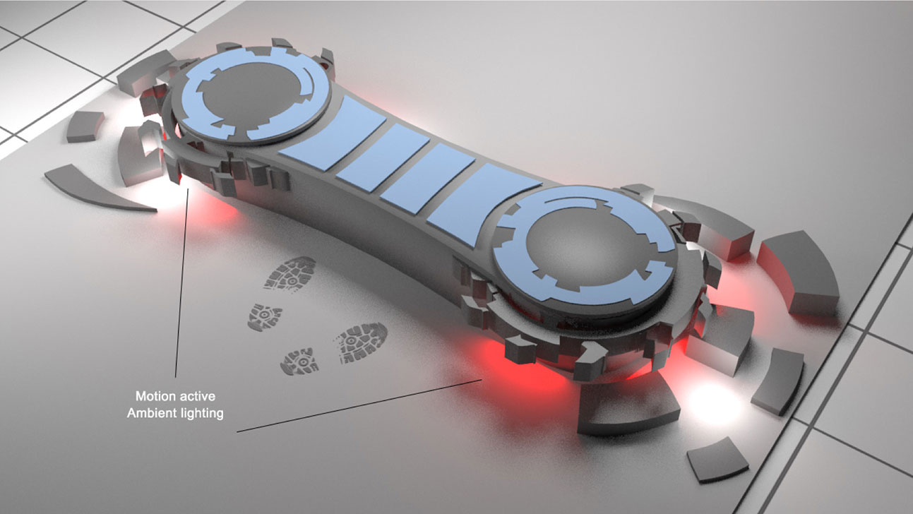

A conceptual project for Footlocker and AMV. Based on a breif to create an music themed installation peice to promote a new range of shoes.

SOCIAL
How am I going to do it
I will be using attachable infrared (IR) sensors in the sneakers.
Each sneaker has an IR sensor attached to the sole. This allow us to keep track of the position of the sneaker when placed on the deck.
Different IR frequencies and RFID tags are allocated to different models of sneakers, this allows us to decipher between models and brands.
The position of the sneaker directly controls Serato and Ableton Live using our API.
Audio data and visual data is piped out of Serato Scratch Live into our Footlocker application and out through the PA and screens that we have in place.
Live Camera feed and ambient lighting are activated and controlled by the proximity of the sneakers.